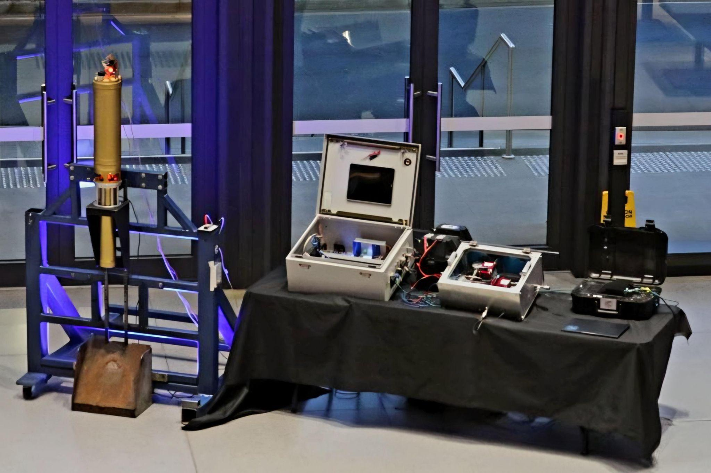

Solaris Mk II Hybrid Engine & Ground Station
Designing and building ground station electronics, capacitive propellant sensor, and distributed control software for a 4 kN hybrid rocket engine
Technical Overview
As Avionics Vice Lead for Propulsion Controls, I led the design and development of the complete ground station control system for the Solaris Mk II—a 4 kN thrust N₂O/paraffin hybrid rocket engine. This page focuses on the technical development work: electronics design, sensor development, and software architecture.
For the competition experience and operations story, see IREC 2025 - Project Zenith Competition.
My Role & Responsibilities
I represented the 5-person avionics team in technical meetings and owned the propulsion control system from design through testing. This included electrical cabinet design, custom sensor development, software architecture, and integration of all control and telemetry systems.

Ground station control electronics and monitoring systems
Ground Station Electronics Design
I designed and built three successive hardware iterations for fueling, ignition, and data logging. Each iteration refined based on test results and operational lessons, culminating in a system capable of 100 kHz data acquisition.
Design Evolution Through Testing

Iteration 1 - Initial prototype

Iteration 2 - Refined layout

Iteration 3 - Final production system
Electrical Cabinet Design
Component Integration
Designed and constructed complete electrical cabinet with DIN rail mounted components: power supplies, networking hardware, Raspberry Pi, LabJack DAQ, motor drivers, and relays.
Custom Cabling
Fabricated custom cable assemblies and connectors for actuators, sensors, and communication lines. All connections designed for reliability under vibration and condensation conditions.
Industrial Standards
Applied structured electrical design principles learned from Bosch, ensuring professional-grade assembly and maintenance accessibility.
Control Architecture
Developed distributed control system integrating LabJack DAQs, STM32 microcontrollers, and Raspberry Pi. The system interfaced with pressure transducers, thermocouples, load cells, valve actuators, and ignition hardware during test operations.
Communication Protocols
RS-422 for high-speed sensor data, CAN for actuator control, MQTT for distributed telemetry and command/control integration across systems.
Automated Sequences
Implemented state machine logic for automated fill, ignition, and abort procedures with safety interlocks at every stage.
Data Acquisition
Real-time monitoring and logging of 20+ channels at 100 kHz for detailed test analysis and system validation.
Capacitive Propellant Sensor Development
Led a team of four to design, manufacture, and test a novel capacitive N₂O propellant level sensor from scratch. Through careful calibration and shielding design, we achieved repeatable measurements with accuracy within ±10 g.

Manufactured sensor assembly

Calibration curve showing ±10g accuracy
Design Process
Research & Requirements
Led complete sensor development from concept through production. Defined requirements for cryogenic N₂O measurement, researched capacitive sensing techniques, and established accuracy targets.
Probe Design
Designed custom sensing probe element using SolidWorks and Creo, optimizing geometry for signal strength while ensuring compatibility with tank mounting constraints.
STM32 Firmware
Developed embedded firmware for capacitance measurement and signal processing. Implemented noise filtering algorithms and serial communication for integration with ground station.
Calibration Methodology
Created comprehensive calibration procedures with regression-based analysis scripts. Achieved ±10g accuracy through iterative testing and curve fitting.
Technical Challenges Solved
Electrical Noise
Initial measurements showed significant noise and drift. Root cause: parasitic capacitance in the cable harness. Solution: Redesigned with actively driven shield guard to eliminate stray coupling.
Signal Stability
Iterative probe geometry refinements to improve signal-to-noise ratio. Optimized electrode spacing and dielectric interface design through testing.
Temperature Compensation
Characterized temperature-dependent drift and implemented compensation algorithms in firmware to maintain accuracy across operating range.
Impact: The sensor's ±10g accuracy enabled integration into automated fill sequences, significantly improving propellant loading precision and safety margins compared to manual measurement methods.
Software & Communication Architecture
Designed and presented the complete software and communication architecture connecting the rocket, engine, and ground station. The system monitored and controlled over 20 signals across the entire propulsion system in real-time.

Simplified system architecture diagram

Main control page in Ignition SCADA
System Layers
Backend Control Logic
Multithreaded Python backend implementing state machine logic for fill, ignition, and abort procedures. Handles real-time decision making, safety interlocks, and command execution.
Operator Interface
Ignition SCADA interface providing real-time telemetry visualization, manual override capabilities, and alarm management for operators during testing.
Data Logging
Dual-tier logging: MQTT-connected database for long-term trend analysis, plus high-rate local recording for detailed post-test debugging.
Key Software Features
State Machine Design
Formal state transitions for operational phases (IDLE → FILL → ARMED → IGNITION → BURN → SAFING). Each transition validated against safety conditions before execution.
Safety Interlocks
Multi-layered abort logic monitoring pressure limits, valve positions, communication health, and operator deadman switches. Any violation triggers immediate safing sequence.
Distributed Telemetry
MQTT pub/sub architecture allowing multiple systems to subscribe to sensor data streams. Enabled parallel monitoring by propulsion, structures, and safety teams.
Automated Sequencing
Scripted test procedures for repeatable operations. Valve timing, sensor checks, and ignition sequences executed with microsecond precision via automated control.
Testing & Validation Campaign
The system underwent extensive testing through cold-flows, hot-fires, and integration checks. Each test cycle informed design improvements and validated safety-critical functionality.
Test Progression
Bench Testing
Individual component validation: sensor accuracy checks, valve cycling tests, communication link verification. Established baseline performance metrics.
Cold-Flow Tests
Full system integration with inert gas (nitrogen). Validated fluid dynamics, valve sequencing, and control logic without combustion risk.
Hot-Fire Campaign
Live engine firing tests with N₂O and paraffin. Verified control system performance under thermal loads, vibration, and EMI from ignition systems.
Lessons From Testing
Iteration 1 → 2: Initial connector choices proved unreliable under vibration. Switched to industrial-grade crimp connectors with strain relief.
Iteration 2 → 3: Electromagnetic interference from pyro channels caused sensor dropouts. Added shielding and ferrite beads to sensitive signal lines.
Software Evolution: Early state machine had race conditions during abort sequences. Redesigned with mutex locks and atomic state transitions for deterministic behavior.
Technical Impact & Lessons
What I Learned
Systems Integration is Hard
Individual subsystems worked perfectly in isolation. Integration revealed timing dependencies, noise coupling, and failure modes invisible in unit tests. Always test the system, not just the parts.
Design for Observability
The telemetry system wasn't just for monitoring—it was critical for debugging. High sample-rate logging let us replay failures and identify root causes that would be impossible to catch live.
Industrial Standards Matter
Principles learned at Bosch (DIN rail layouts, structured cabling, proper grounding) directly translated to higher reliability. Student projects benefit from industrial engineering practices.
Safety Through Redundancy
Software interlocks are great, but hardware kill switches save lives. Multiple independent abort paths meant we could trust the system even when individual components failed.
Reusable Design Elements
The architecture and lessons from this system directly informed future Monash HPR projects. The MQTT telemetry approach, state machine patterns, and electrical design standards became team best practices for subsequent engines and avionics systems.
To read about how this system performed during competition and the operational challenges we faced, see IREC 2025 - Project Zenith Competition.